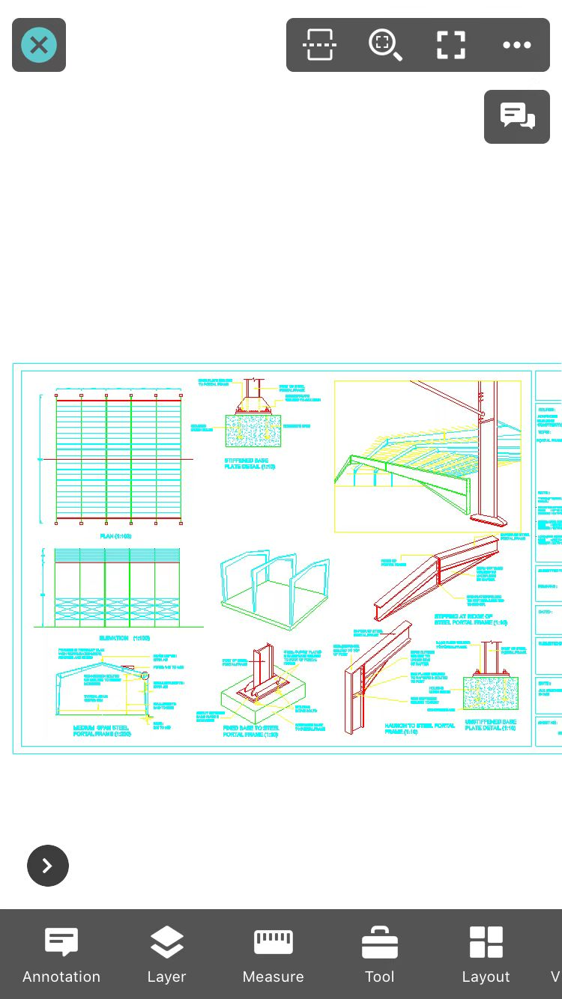

Exit: Exit.
Multiple DWG View: view two drawings at one time.
Full Drawing: Display full drawing.
Full View: Display in full creen.
More: tap to display more information, such as Switch to Edit Mode, File Information, Export, Help, Download Annotation Resource, Hide annotations, Regen, and Settings.
Quick command: Display recent used commands. Tapping on the command icon could start it immediately. It is default to display quick commands, and it could be hidden by changing it in settings. Long pressing on the command icon could fix its position on the right. Long Pressing on the fixed command could remove it from fixed position.
Annotation: including Sketch, Arrow, Text, Revcloud, Recording, Image, Video, Leader, Line,Rectangle, Ellipse, Number.
Layer: It displays all layer commands, including Layer List, Layer Off, Off Other layers, Layer Previous,and Turn All Layers On.
Measure: Including Distance, Continuous, Area, Lateral Area, ID Point , Arc length, Entity, Angle, Scale, Result, Statistic Result, and Precision.
Tool: It provides Find, Count Block, and Bookmark function.
Layout: You can switch between model space and layout space freely.
Visual Style: It provides 2D and 3D visual styles.